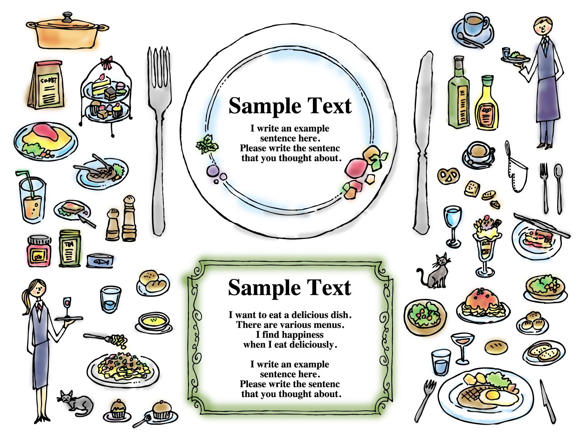

一人旅の最大のネック！食事についての解決案
食事について
一人旅の魅力は『自由』な事ですが、唯一のデメリットは「夕食」だと思います。 朝食はホテルで済ませたり、街のカフェに入ってみたり 昼食はカジュアルなレストランに入ってみたり、テイクアウトして景色のいい所で食べたりと意外とやり過ごせますが 夕食だけは1人でレストランに入るとかなり浮きます(笑) おひとり様の文化が根付いているのは日本だけです。なので国内は問題ないですが、海外だと特に女性だと好奇の目にさらされているのをヒシヒシと感じてしまいます… 「あなたは、なぜ1人で食事しているの？」と聞かれた事もあります(笑) 日本では当たり前のおひとり様ですが海外では文化に無い事のようなのでレストランで夕食するなら仲間を集めるのをお勧めします。誰と夕食に行くの？
一人旅で誰かと夕食するには、下記の方法しか無いと思います。 ・当日、声をかける ・事前(出発前)に約束しておく 以前は敬遠してたんですが、最近は国内でも海外でも宿で「ドミトリー」を利用する事が多くなってきました。 ドミトリーだと同じ部屋の方や共用スペースで顔見知りになった方と「今日の夜、ご飯食べに行こうよ！」という話しになる事があります。 これは個人差があるので自信を持ってのお勧めは難しいですが、良くても悪くてもいい経験になるので、1度チャレンジしてみて下さい！お勧めのサイト
事前(出発前)に約束しておくのもお勧めです。私は『地球の歩き方 旅仲間募集掲示板』を使って何度も食事仲間とお食事しました。 この掲示板では、場所は日時はもちろん他の条件も設定できるので、理想の食事仲間に出会えます。 例えば ・女性限定 ・非喫煙者 ・〇〇駅の近く ・△△料理を食べたい など自分の条件を詳しく提示すると賛同してくれる方とは気が合うので、楽しくお食事する事が出来ます。 ただ、あまりにも条件を付けると人が集まりにくくなるので「お酒は弱いので食べるほうが好きですが、酒豪の方でも大歓迎です。」など妥協できる点も書いておくといいと思います。 ■地球の歩き方 旅仲間募集掲示板 https://bbs.arukikata.co.jp/今までの経験より
どうしても行ってみたい所へは勇気を出して1人で行った事もありますがどんなに美味しくても、やっぱり寂しいが勝つなぁと思う事が多かったです。 そういうお店は、夕食は避けてランチで気軽に利用するほうが良さそうです。 当日出会った方と食事に行くパターンは、嫌な目にあった記憶はありません。初めて同士なので話題も尽きず、行きたいお店に行けて食べたい物を食べれて、満足する事が多いです。 事前に約束していた方と食事に行くパターンは、食事自体は問題ないですが待合せで戸惑う事がありました。「〇〇駅集合」としていても、出口が複数あってお互い違う場所で待っていた、なんて事もありました。 また「早めに着いたので、今から行かない？」というパターンもあり予定が狂った、事もありました。これは事前に「集合まで観光しているので、時間は変更出来ない」というアピールをしておけば回避出来ると思います。
旅仲間についての注意事項
「地球の歩き方 旅仲間募集掲示板」では、私はいつもいい旅仲間と出会えていますが、たまに現地在住の日本人からナンパ目的なのかな、という感じのメッセージが来る事もあるので、常識の範囲で見極めて下さい。女性であれば「女性限定」で募集すると安心ですね。 また、お食事をした旅仲間と意気投合して「明日一緒に観光しよう！」という流れになる事も多々あります。その場の雰囲気に流されやすい私は、一緒に観光した事が何度かありますが、せっかくの一人旅なのに気を遣うハメになってしまい、最終的には後悔する事が多いです。「Noと言えない日本人」ですが、そこはしっかり自分の意思表示をしましょう。 特に美術館巡りやハイキングなど個人によってペースが違ってくるものは、気を使い過ぎて疲れてしまいますので要注意です。 次は、海外旅行で持って行って良かったものをご紹介します 海外旅行で持って行って良かったものスポンサーリンク